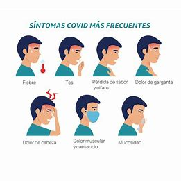

Está en: Página Principal > Letra C > Covid-19 (SARS-CoV-2)
Índice artículo
- Causas de la infección por Covid-19
- Síntomas de la enfermedad
- Pruebas para detectarlo
- Tratamiento
- Expectativas
Covid-19 (SARS-CoV-2)
La enfermedad por coronavirus de 2019, más conocida como COVID-19, covid-19 o covid, e incorrectamente llamada neumonía por coronavirus o coronavirus es una enfermedad infecciosa causada por el SARS-CoV-2. El total de fallecidos hasta 2024 según (Hopkins, 2024) es de 6.881.955 de fallecidos, así mismo, según (Hopkins, 2024), a día de hoy, se han administrado un total de 13.338.833.198 vacunas.
Causas de la infección por Covid-19
- Transmisión por goticulas respiratorias
- Contacto cercano con personas infectadas
- Contacto con superficies contaminadas
Síntomas de la enfermedad
- Fiebre o escalofríos
- Tos
- Dificultad para respirar (disnea)
- Fatiga
- Dolores musculares o corporales
- Dolor de cabeza
- Pérdida del gusto o del olfato
- Dolor de garganta
- Congestión o secreción nasal
- Náuseas o vómitos
- Diarrea
Pruebas para detectarlo
- Prueba PCR (Reacción en Cadena de la Polimerasa)
- Es la prueba más precisa y confiable para detectar el virus. Se realiza con una muestra de mucosa nasal o de garganta. Puede tardar varias horas o días en dar resultados.
- Prueba de antígenos
- Es una prueba rápida que detecta proteínas del virus. Generalmente se realiza con un hisopo nasal y ofrece resultados en 15-30 minutos. Es menos precisa que la PCR, pero útil para detectar infecciones activas.
- Prueba serológica (de anticuerpos)
- Detecta anticuerpos en la sangre que indican si una persona ha tenido una infección previa de COVID-19. No sirve para diagnosticar infecciones activas, ya que los anticuerpos tardan en desarrollarse.
- Prueba molecular rápida
- Similar a la PCR, pero más rápida. También utiliza una muestra nasal o de garganta y puede dar resultados en minutos. Aunque más precisa que la de antígenos, es menos precisa que la PCR estándar.
Tratamiento
El tratamiento para COVID-19 varía según la gravedad. Para casos leves a moderados, se recomienda descansar, hidratarse, tomar medicamentos de venta libre para aliviar síntomas, y monitorear los síntomas. Para casos moderados a severos, se puede necesitar oxígeno suplementario, medicamentos antivirales como remdesivir, y corticosteroides como la dexametasona. En casos graves, puede ser necesaria hospitalización con soporte respiratorio y monitoreo intensivo. En todos los casos, es crucial seguir las recomendaciones médicas, aislarse para evitar contagios, usar mascarillas, y mantener una buena higiene.
Expectativas
La mayoría de las personas con COVID-19 leve se recupera en unas dos semanas con descanso y cuidados básicos. Los casos más graves pueden necesitar hospitalización y recuperación prolongada. La mayoría de los pacientes se recupera eventualmente, pero algunos pueden tener efectos a largo plazo.